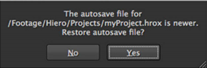

The autosave function creates a temporary project save file at 5 minute intervals, but you can adjust force project autosave after in the Preferences > General dialog. See Appendix A: Preferences for more information.
At startup, the application scans for autosaved projects and displays a prompt if autosaves exist.
Click Yes to load the autosave or No to ignore and delete it.
Opening a project also uses the autosave functionality. If the autosave is more recent than the saved project file, a prompt displays:

Click Yes to load the autosave file or No to load the original project file.
NOTE: Clicking No does not delete the autosaved project in this case.
|
|